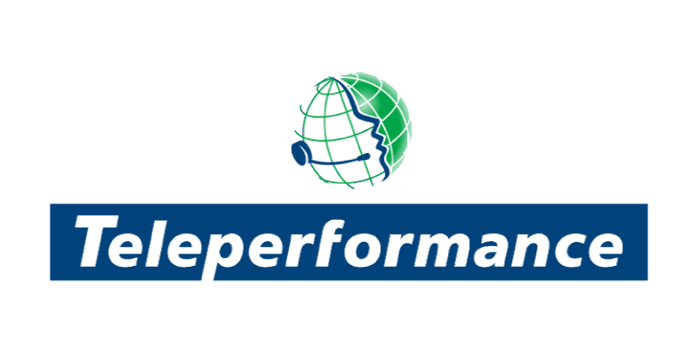

Anouar Mansouri - Mon
Quelle prétention de prétendre que l'informatique est récente : Adam et Eve avaient déjà un Apple !
Mon expérience
CEO à Com and Dev
Nom de l’entreprise : Com-and-Dev
Dates d’emploi : déc. 2015 – Aujourd’hui.
Durée d’emploi : 2 ans 4 mois.
Lieu : Sousse
Taches : La direction opérationnelle de la boite:
- Ressources Humaines (effectif : 2)
- Comptabilité (effectif : 1)
- Centre d'appel (effectif : 12)
- Département Marketing Digital (effectif : 4)
- Développement Web et mobile (effectif : 12)
Analyste gestion de données

Nom de l’entreprise : Teleperformance
Dates d’emploi : juin 2012 – déc. 2015 .
Durée d’emploi : 3 ans 7 mois.
- analyse des données et des critères de performance
- Evaluation des écarts et des impacts associés + propositions des plans d'action globaux à court et à long terme .
- s'assurer de l'atteinte des objectifs + Aider les membres de la direction dans le processus décisionnel.
- Réaliser des bilans et des reportings réguliers aussi bien pour les clients et les équipes de Teleperformance.
- Alimentation ,gestion et adminstration de bases de données (Sql server) .
- Conception et automatisation des reportings .
Dataminer
Gestionnaire de donnés à Teleperformance
Dates d’emploi : juin 2011 – mai 2012
Durée d’emploi : 1 an
- Extraire, analyser les données qualificatives de l’activité.
- Mettre en place et optimiser les moyens nécessaires en vue d’un pilotage quantitatif et qualitatif de l’activité.
- Réalisez des bilans et des Reporting réguliers aussi bien pour les clients et les équipes de Teleperformance.
Mes compétences
- Managment/Ressources humaines
- Marketing Digitale
- Microsoft excel
- SQL langage
- Visual Basic
- HTML: Ce que je viens d apprendre sur open classroom
Ma formation
- Bac économie gestion : 2002-2003 - Kasserine
- Maitrise en gestion : 2006-2007 - Isg Sousse
- Dilome en Transcat SQL 2009-2010 Advancia - Tunis